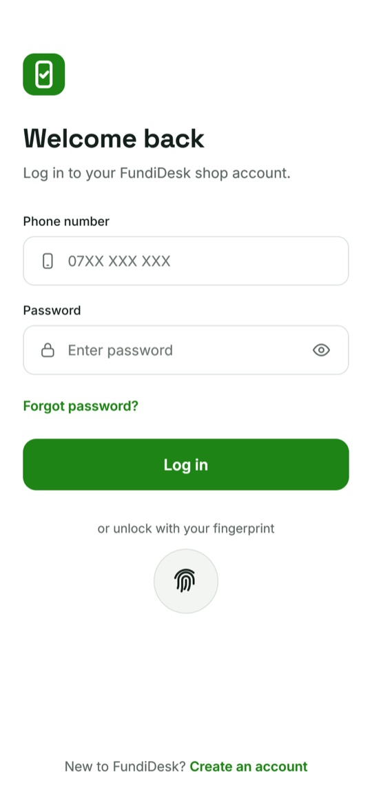
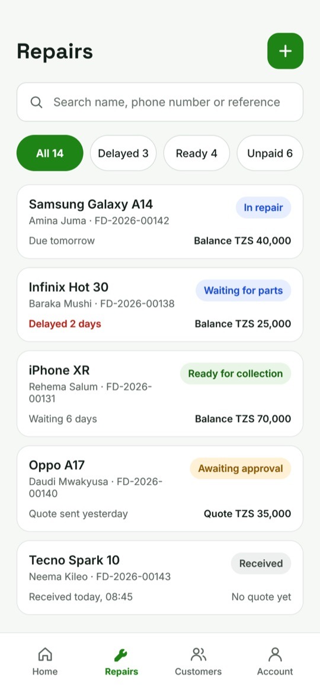
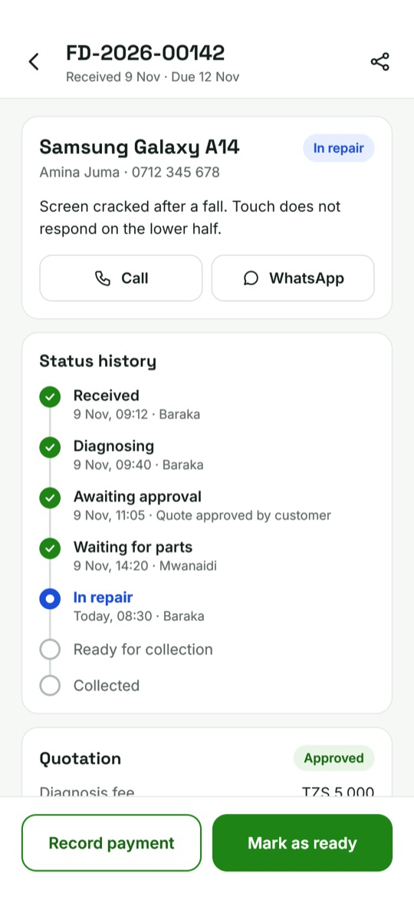

FundiDesk
A repair shop's app: twelve screens reproduced from a real design, each tested against the design's own picture. It is the model to imitate when building from a design.




What it shows
- The loop from a picture to code. Render, compare with
morningstar-diff, read the report, change one thing, repeat. - A design's tokens in one place:
src/theme.rsholds every colour,src/icons.rsevery icon,src/components.rsevery piece that occurs more than once. - One file per screen, so screens can be built in parallel.
- Real forms: its text fields are working inputs.
- A limit per screen in
tests/fidelity.rs: the largest share of pixels that may differ from the design, set from what was measured.
The screens
Splash, onboarding, log in, create account, verification, shop setup, dashboard, repairs list, new repair, repair details, record payment and tracking.
Run it
cargo test -p fundidesk
cargo run -p fundidesk --example screenshot -- out/ 07 --diff --phone # one screen against its design
tools/preview.sh fundidesk
MORNINGSTAR_APP=fundidesk MORNINGSTAR_ABIS=arm64-v8a tools/build-android.sh --installStart with examples/fundidesk/SCREENS.md in the repository: it is the method, written for whoever builds the next screen.
What has been verified
It launched on a Galaxy A27 (first frame drawn, then idle, from the log). Typing into its fields was verified there with the system keyboard.